Conceito: Prato da Semana
O símbolo é um prato visto de cima. A borda tem 7 cores, uma para cada dia da semana, e no centro fica um garfo com uma folha. A ideia é uma semana inteira organizada num prato. O círculo de alimentos e a folha vêm da identidade da Rita Magalhães; os ícones da versão ilustrada foram tirados do cartão de visitas dela.
Versões do logo
Horizontal: uso principal (site, cabeçalhos)
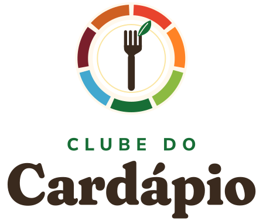
Vertical: capas, embalagens, PDFs
Negativo: fundos escuros
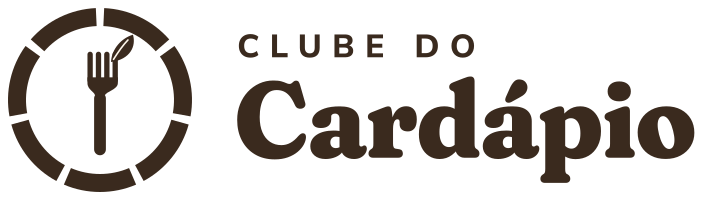
Monocromático: carimbo, sacola, 1 cor

Símbolo: avatar, favicon, selos
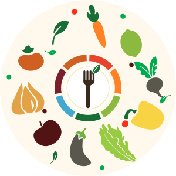
Ilustrado: decoração, posts, capas
Assinatura de endosso (opcional)
Use só onde a autoria da Rita reforça a confiança: seção "Quem é a Rita", capa dos PDFs, rodapé. O Clube do Cardápio é a marca principal.
Cores
O amarelo girassol vem da foto do HERO e é a cor da marca. O verde folha é a cor dos botões de compra. As 7 cores da semana aparecem só em detalhes: ícones, selos e dias do cardápio.
Girassol#F7D157 · fundo do HERO, destaques
Creme#FFF8EC · fundo das seções
Café#3A2A1E · títulos e textos
Folha#176E36 · botões de compra (texto branco)
Azul Rita#42A8CF · confiança, Idosos
Tomate#E8432D · ênfase, Famílias
Cores da semana (borda do prato)
Seg
Ter
Qua
Qui
Sex
Sáb
Dom
Cor de cada público
IdososAzul Rita: cuidado
FamíliasTomate: mesa cheia
MarmitaFolha: economia e rotina
Tipografia
Todas as fontes são gratuitas (Google Fonts) e podem ser usadas no site, no Canva e nos PDFs.
Uso correto
- Deixe em volta do logo um espaço livre de pelo menos a altura do "C" de Cardápio.
- Tamanho mínimo: símbolo com 24 px e logo horizontal com 120 px de largura.
- Sobre fotos, coloque o logo numa placa creme.
- Use a versão monocromática quando só houver uma cor de impressão.
- Não mude as cores da borda do prato nem a ordem delas.
- Não estique, não gire e não aplique sombra no logo.
- Não use o logo colorido sobre o amarelo sem a placa do prato.
- Não troque as fontes do logotipo; ele já está convertido em curvas.
Imagem do HERO
A imagem de referência foi limpa: o texto embutido saiu (o título agora é texto real na página), o tablet mostra um cardápio legível com os 7 dias, a folha virou a lista de compras e a sacola recebeu o logo novo. A resolução foi dobrada para 2752×1536. No celular, a imagem é usada em duas faixas, uma em cima e outra embaixo do título.
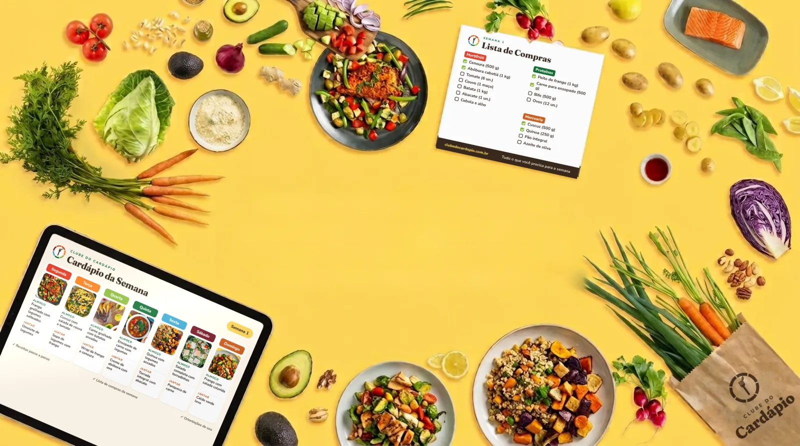

Faixa superior (celular)

Faixa inferior (celular)
As telas do tablet e da folha são ilustrativas. Quando os PDFs finais estiverem prontos, elas serão trocadas por prévias reais (item 18 do Memorial).
Arquivos em docs/marca/instagram/: foto de perfil, modelos de post e story e capas dos destaques.
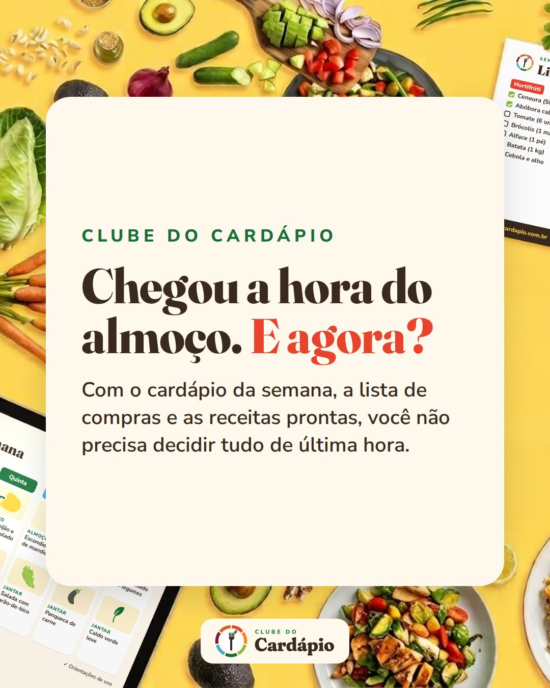
Post 1080×1350
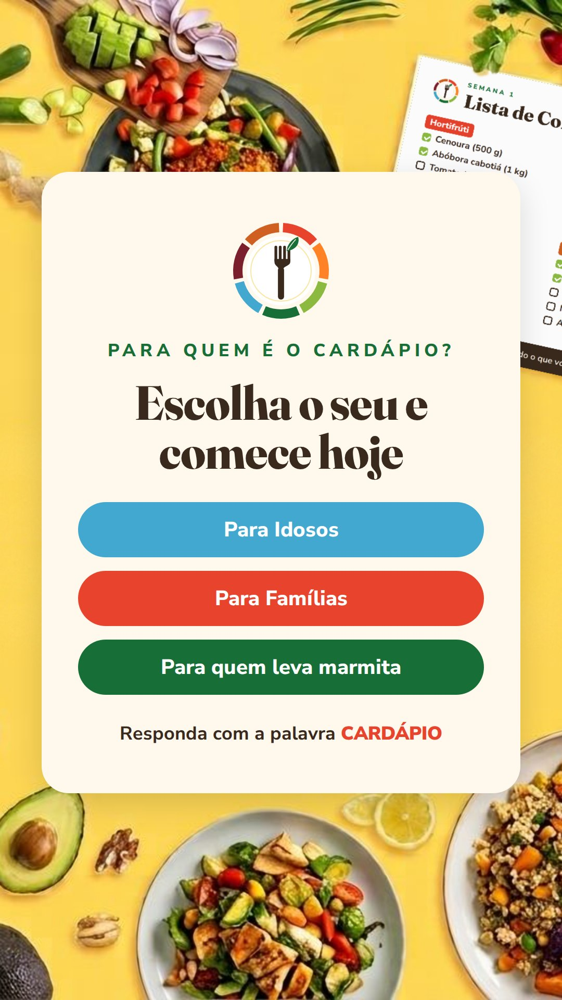
Story 1080×1920
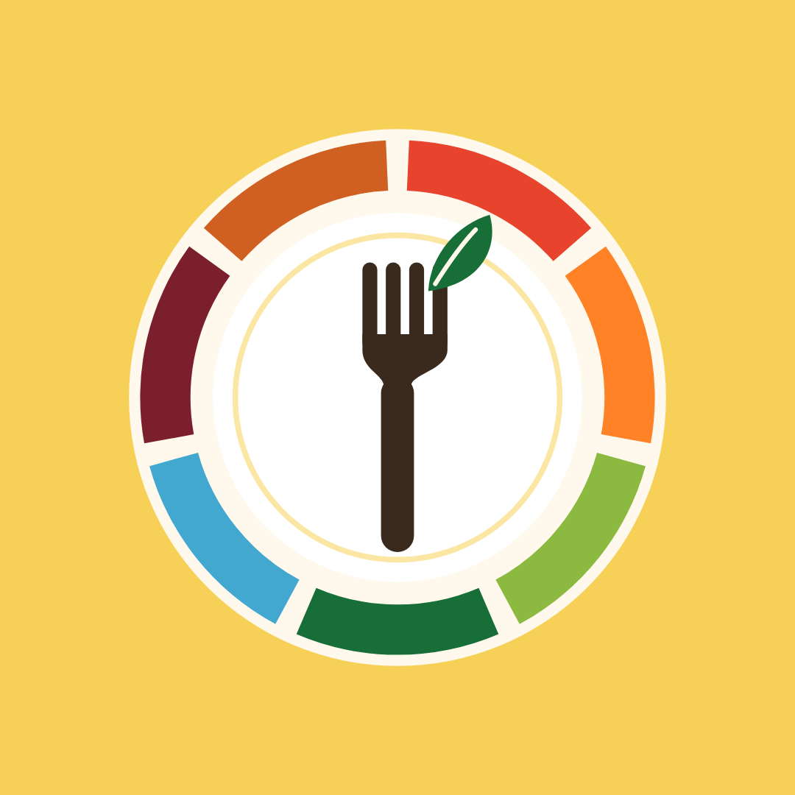
Foto de perfil
Capas dos destaques
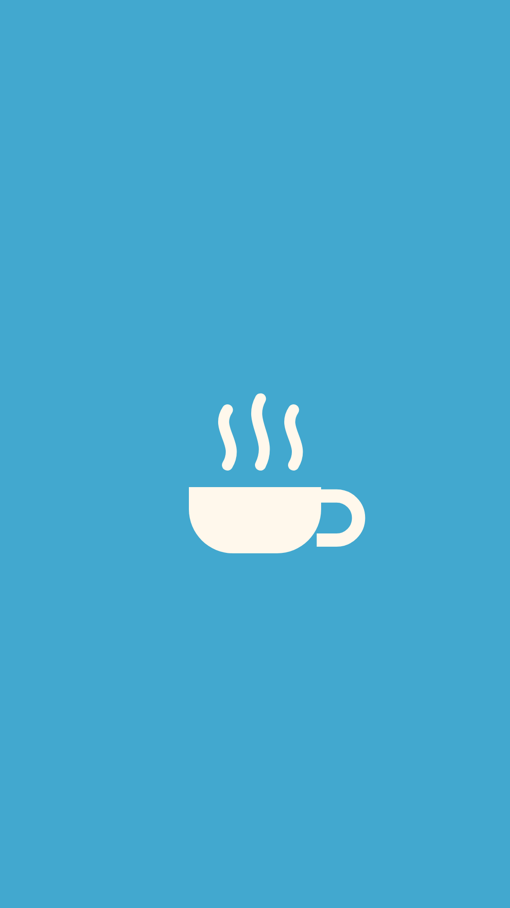
Idosos
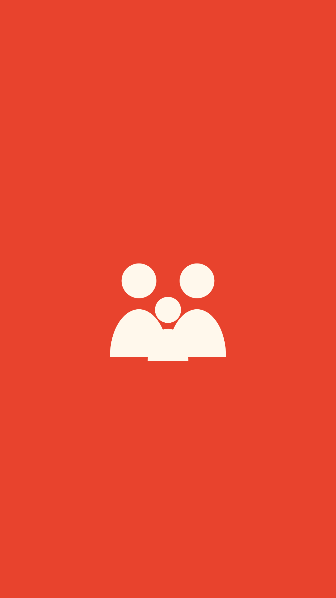
Famílias
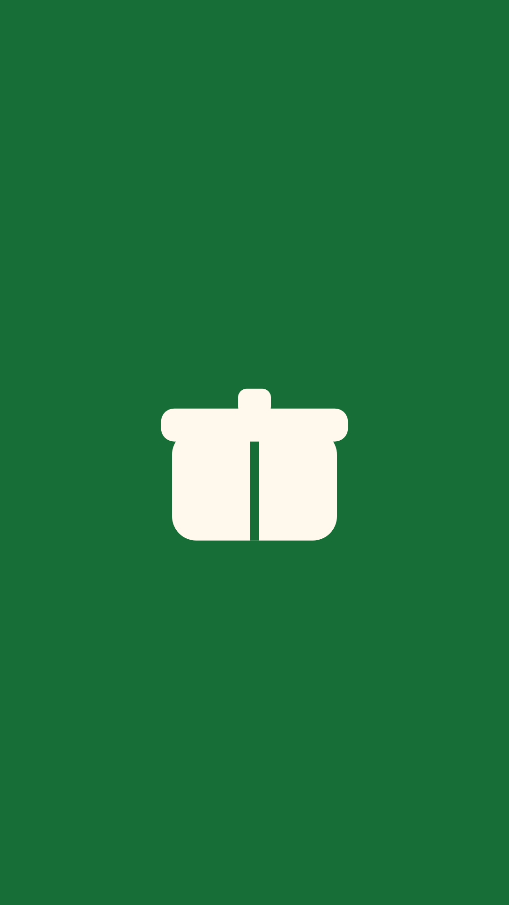
Marmita
Depoimentos
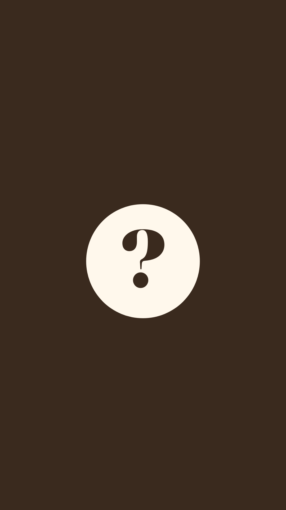
Dúvidas
Arquivos
assets/brand/*.svg: logos vetoriais (texto convertido em curvas).
assets/brand/png/: PNG com fundo transparente.
assets/brand/icones/: ícones de alimentos extraídos do cartão da Rita.
favicon.svg, favicon.ico, apple-touch-icon.png: ícones do site.